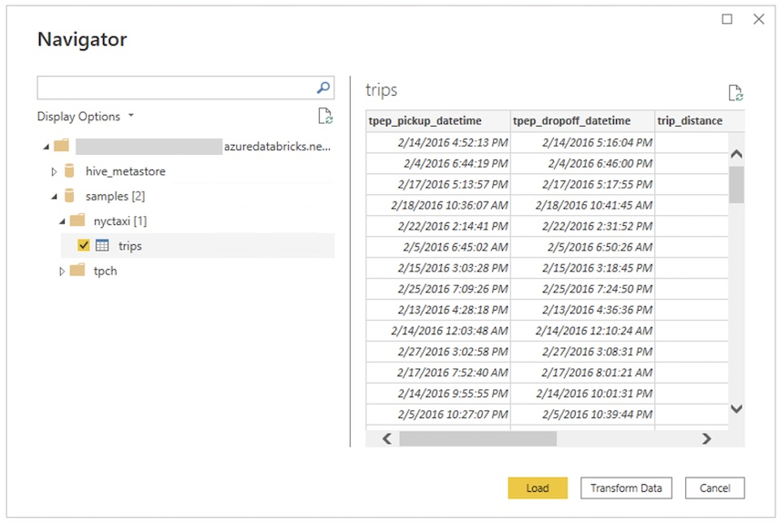
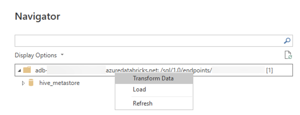

Connect Power BI to Databricks
Microsoft Power BI is a business analytics service that provides interactive visualizations with self-service business intelligence capabilities, enabling end users to create reports and dashboards by themselves without having to depend on information technology staff or database administrators.
When you use Databricks as a data source with Power BI, you can bring the advantages of Databricks performance and technology beyond data scientists and data engineers to all business users.
You can connect Power BI Desktop to your Databricks clusters and Databricks SQL warehouses.
Requirements
Power BI Desktop 2.85.681.0 or above. Download the latest version. To use data managed by Unity Catalog with Power BI, you must use Power BI Desktop 2.98.683.0 or above (October 2021 release).
Note
Power BI Desktop requires Windows. An alternative for other operating systems is to run Power BI Desktop on a physical host or a Windows-based virtual machine and then connect to it from your operating system.
If you use a version of Power BI Desktop below 2.85.681.0, you also need to install the Databricks ODBC driver in the same environment as Power BI Desktop.
One of the following to authenticate:
(Recommended) Power BI enabled as an OAuth application in your account. This is enabled by default.
A Databricks personal access token.
Note
As a security best practice when you authenticate with automated tools, systems, scripts, and apps, Databricks recommends that you use OAuth tokens.
If you use personal access token authentication, Databricks recommends using personal access tokens belonging to service principals instead of workspace users. To create tokens for service principals, see Manage tokens for a service principal.
A Databricks username (typically your email address) and password.
Username and password authentication might be disabled if your Databricks workspace is enabled for single sign-on (SSO).
Connect Power BI Desktop to Databricks using Partner Connect
You can use Partner Connect to connect to a cluster or SQL warehouse from Power BI Desktop in just a few clicks.
Make sure your Databricks account, workspace, and the signed-in user meet the requirements for Partner Connect.
In the sidebar, click
 Partner Connect.
Partner Connect.Click the Power BI tile.
In the Connect to partner dialog, for Compute, choose the name of the Databricks compute resource that you want to connect.
Choose Download connection file.
Open the downloaded connection file, which starts Power BI Desktop.
In Power BI Desktop, enter your authentication credentials:
Personal Access Token: Enter your Databricks personal access token.
Username / Password: Enter your Databricks username (typically your email address) and password. Username and password authentication might be disabled if your Databricks workspace is enabled for single sign-on (SSO). If you cannot log in using your Databricks username and password, try using the Personal Access Token option instead.
Microsoft Entra ID: Not applicable.
Click Connect.
Select the Databricks data to query from the Power BI Navigator.

Connect Power BI Desktop to Databricks manually
Follow these instructions, depending on your chosen authentication method, to connect to a cluster or SQL warehouse with Power BI Desktop. Databricks SQL warehouses are recommended when using Power BI in DirectQuery mode.
Note
To connect faster with Power BI Desktop, use Partner Connect.
Get the Server Hostname and HTTP Path.
Start Power BI Desktop.
Click Get data or File > Get data.
Click Get data to get started.
Search for Databricks, then click the connector:
Azure Databricks, if you authenticate using a personal access token or your Databricks username and password.
Note
Although the connector name is Azure Databricks, it works with Databricks on AWS.
Databricks (Beta), if you authenticate using OAuth.
Click Connect.
Enter the Server Hostname and HTTP Path.
Select your Data Connectivity mode. For information about the difference between Import and DirectQuery, see Use DirectQuery in Power BI Desktop.
Click OK.
Click your authentication method:
Username / Password: Enter your Databricks username and password. Username and password authentication may be disabled if your Databricks workspace is enabled for single sign-on (SSO). If you cannot log in by using your Databricks username and password, try using the Personal Access Token option instead.
Personal Access Token: Enter your personal access token.
OAuth: Click Sign in. A browser window opens and prompts you to sign in with your IdP. After the success message appears, exit your browser and return to Power BI Desktop.
Click Connect.
Select the Databricks data to query from the Power BI Navigator. If Unity Catalog is enabled for your workspace, select a catalog before you select a schema and a table.
Using a custom SQL query
The Databricks connector provides the Databricks.Query data source that allows a user to provide a custom SQL query.
Follow the steps described in Connect with Power BI Desktop to create a connection, using Import as the data connectivity mode.
In the Navigator, right click the top-most item containing the selected host name and HTTP path and click Transform Data to open the Power Query Editor.
In the function bar, replace the function name
Databricks.CatalogswithDatabricks.Queryand apply the change. This creates a Power Query function that takes a SQL query as parameter.Enter the desired SQL query in the parameter field and click Invoke. This executes the query and a new table is created with the query results as its contents.
Automated HTTP proxy detection
Power BI Desktop version 2.104.941.0 and above (May 2022 release) has built-in support for detecting Windows system-wide HTTP proxy configuration. Download the latest version.
Power BI Desktop can automatically detect and use your Windows system-wide HTTP proxy configuration.
If the proxy server does not provide a CRL distribution point (CDP), Power BI might show the following error message:
Details: "ODBC: ERROR [HY000] [Microsoft][DriverSupport] (1200)
-The revocation status of the certificate or one of the certificates in the certificate chain is unknown."
To fix this error, complete the following steps:
Create the file
C:\Program Files\Microsoft Power BI Desktop\bin\ODBC Drivers\Simba Spark ODBC Driver\microsoft.sparkodbc.iniif it does not exist.Add the following config to your
microsoft.sparkodbc.inifile:[Driver] CheckCertRevocation=0
Power BI Delta Sharing connector
The Power BI Delta Sharing connector allows users to discover, analyze, and visualize datasets shared with them through the Delta Sharing open protocol. The protocol enables secure exchange of datasets across products and platforms by leveraging REST and cloud storage.
For connection instructions, see Power BI: Read shared data.
Limitations
The Databricks connector supports web proxy. However, automatic proxy settings defined in .pac files aren’t supported.
In the Databricks connector, the
Databricks.Querydata source is not supported in combination with DirectQuery mode.The data that the Delta Sharing connector loads must fit into the memory of your machine. To ensure this, the connector limits the number of imported rows to the Row Limit that was set earlier.